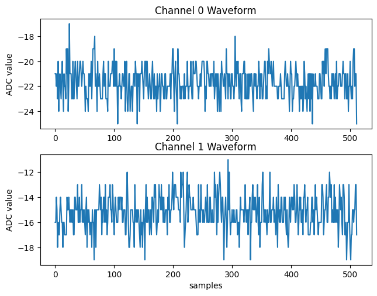

This page is automatically generated from a Jupyter Notebook.
Download the original notebook using the button below.
Download the original notebook using the button below.
Processing Waveforms from your events
[33]:
import matplotlib.pyplot as plt
import numpy as np
import skutils
%matplotlib inline
Put your file paths here
[34]:
FILENAMES = [r"C:\Users\SkuTek\Downloads\cs137_relative_timestamp_test_03.07.06PM_Dec05_2025_seq000001.itx"]
Prep the Plot
[35]:
fig,axes = plt.subplots(2,1)
fig.tight_layout()
axes[0].set_title("Channel 0 Waveform")
# axes[0].set_xlabel("samples")
axes[0].set_ylabel("ADC value")
axes[1].set_title("Channel 1 Waveform")
axes[1].set_xlabel("samples")
axes[1].set_ylabel("ADC value")
for event in skutils.quickLoad(FILENAMES):
ch0_wave = event[0].wave
ch1_wave = event[1].wave
axes[0].plot(ch0_wave)
axes[1].plot(ch1_wave)
plt.show()
